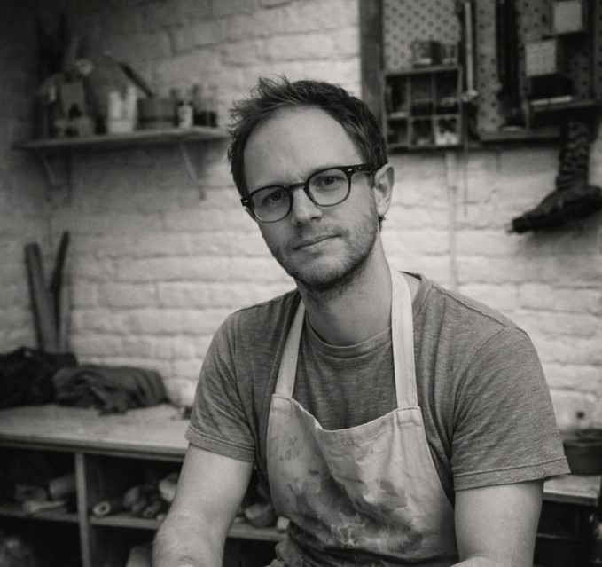

Ce qui est fait lentement reste.
Cette phrase guide mon travail. Prendre le temps de fabriquer, choisir des matériaux adaptés, accepter les irrégularités et créer des objets qui trouvent naturellement leur place dans le quotidien.
L'origine
Ingénieur de formation, j'évolue au quotidien dans un univers fait de "bit & byte", d'architectures cloud et de transformations digitales (LinkedIn). Ce métier m'a appris la rigueur, la précision et le goût des systèmes cohérents.
Mais à un moment, j'ai ressenti le besoin d'un rythme différent de celui du clavier. D'un geste plus ancré. D'un rapport direct à la matière. D'un matériau qui ne ment pas.
C'est ainsi que j'ai rencontré le grès.

Le geste
Aujourd'hui, je façonne chaque pièce à la main dans mon atelier. Le tournage impose un tempo calme et patient. Ici, rien n'est instantané. Chaque forme demande du temps, de l'attention, du contrôle, mais aussi l'acceptation des surprises de la matière.
Le travail de la terre devient un équilibre entre précision du geste et lâcher-prise. Là où le numérique recherche la perfection reproductible, la céramique accepte la variation, l'imprévu et la singularité.
Apprenti auprès de Didier Descamps, j'ai développé une approche centrée sur la simplicité des formes et l'attention portée à l'usage. Le tournage est devenu mon langage. Chaque pièce naît d'un geste répété, presque méditatif.
La matière
Je travaille principalement le grès de Saint-Amand-en-Puisaye, une terre dense, robuste et vivante. Elle réagit, s'exprime, résiste parfois — et c'est dans ce dialogue que je trouve ma place.
Chaque pièce évolue au fil des étapes : tournage, tournassage, séchage, émaillage puis cuisson à haute température. Ce processus long transforme progressivement la terre brute en objet durable, conçu pour accompagner le quotidien.
Mes créations privilégient des lignes épurées, des volumes équilibrés et un émaillage sobre qui laisse la matière s'exprimer sans artifices.
Les objets
Je réalise principalement des objets du quotidien : bols, tasses, vases, pichets, assiettes ou pièces décoratives. Des formes simples, pensées pour être utilisées tous les jours.
Le grès est une matière résistante, adaptée à un usage quotidien tout en conservant une présence naturelle et authentique. J'accorde une importance particulière à l'équilibre entre fonctionnalité et esthétique, afin que chaque objet trouve naturellement sa place.
Dans un monde qui va vite, je choisis de fabriquer lentement. Vous ne trouverez ni formes parfaitement identiques, ni séries standardisées. Les légères irrégularités font partie du vivant et donnent à chaque pièce son caractère unique.
Je cherche à concevoir des objets simples et durables, qui accompagnent le quotidien sans chercher l'attention : des pièces utiles, silencieuses, mais présentes. Des objets conçus pour durer, pour être utilisés, manipulés et intégrés naturellement dans la vie de tous les jours.